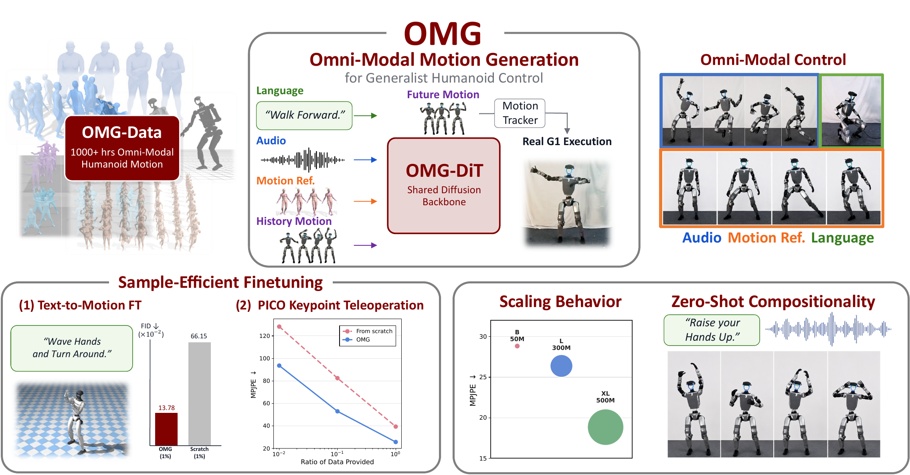
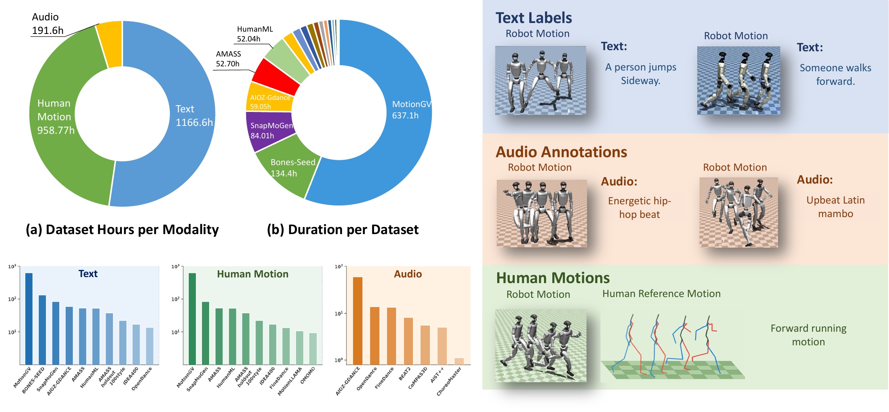
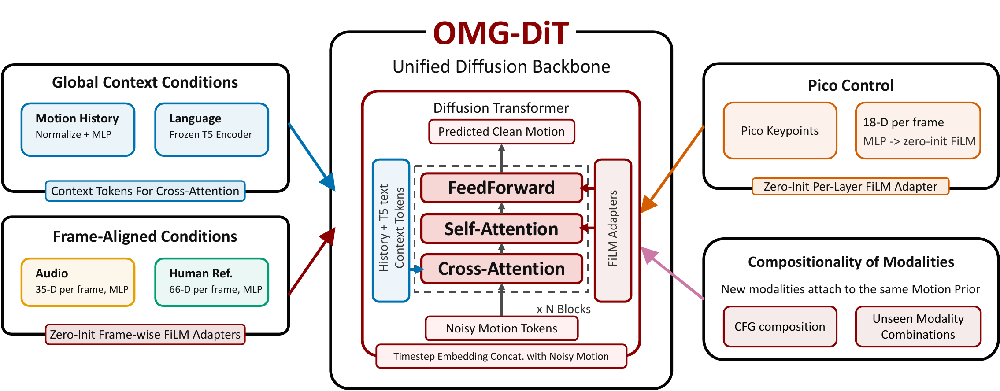

OMG framework
Unifies diverse human intent signals under a generator-tracker hierarchy that maps conditions into physically executable robot trajectories.
OMG learns a generalist motion generator that converts diverse human intent signals into trackable whole-body trajectories for Unitree G1 control.
Tsinghua University
* Equal contribution † Corresponding author

Overview
Humanoid whole-body control has made rapid progress, but RL-based methods remain tied to narrow skill policies and heavy reward engineering, while motion-tracking methods still require a reference motion at inference time. This leaves an important missing layer: a motion generator that can translate high-level, multi-modal intent into future robot motion before a low-level controller executes it.
The system follows a generator-tracker hierarchy. OMG-DiT predicts future trajectories from language, audio, human reference motion, motion history, and compositions of these conditions in real time; a pretrained motion tracker then converts those references into physically executable Unitree G1 trajectories.
This hierarchy is empowered by OMG-Data, a 1174.66-hour omni-modal humanoid motion corpus acquired by retargeting, filtering, annotating, and aligning publicly available data into the Unitree G1 motion space. New control interfaces can be added through lightweight encoders while reusing the pretrained motion prior.
Contributions
Unifies diverse human intent signals under a generator-tracker hierarchy that maps conditions into physically executable robot trajectories.
Curates a large-scale omni-modal humanoid corpus through retargeting, filtering, annotation, and alignment into the Unitree G1 motion space.
Introduces a diffusion-based backbone with extensible and compositional conditioning from language, audio, and human reference motions.
Demonstrates state-of-the-art omni-modal control, model scaling, sample-efficient adaptation, and zero-shot composition of control signals.
OMG-Data
OMG-Data aggregates heterogeneous graphics and humanoid datasets, validates and segments the raw clips, retargets motions into Unitree G1 embodiment, and filters physically invalid trajectories through simulation-in-the-loop screening.


OMG-DiT
OMG-DiT decouples the motion prior from the conditioning modality. A shared denoising transformer models feasible Unitree G1 motion, while language, music, and human reference motion can all condition the generator through modality-specific encoders, cross-attention, FiLM adapters, and classifier-free guidance.
Motion history and language instructions enter the shared motion prior through global context tokens.
Frame-aligned music and audio cues modulate timing, rhythm, and style throughout denoising.
Reference trajectories condition the generator with per-frame motion guidance for whole-body control.
Results Highlights
OMG turns different conditioning modalities into executable G1 whole-body motion. The composition demo is a continuous take where the robot switches control signals and modalities in real time.
Language
Natural-language instructions directly steer future robot motion, from recognizable stylized actions to whole-body locomotion.
Audio
Audio cues shape rhythm, timing, and style while the tracker keeps the generated motion executable on the Unitree G1.
Human Ref
OMG supports guiding whole-body robot motion with a human reference trajectory, serving as a neural retargeter.
Composition
One continuous shot switches across text, human reference, audio, and composed text-plus-audio conditions without resetting the robot behavior.
Citation
If you find this work useful, consider citing:
TBD